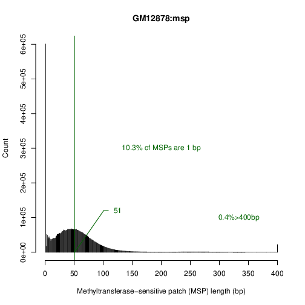 | Percent(MSPs>150bp)=3%
Percent(MSPs==1bp)=10.3%
Median(MSPs!=1bp)=51
Percent(MSPs>400bp)=0.4%
|
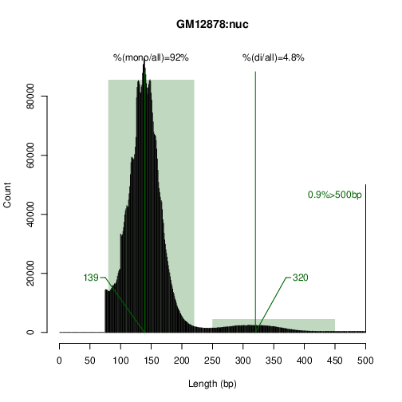 | # Note: 80bp <= mono_nuc <= 220bp
# Note: 250bp <= di_nuc <= 450bp
Median(mono_nuc)=139
Median(di_nuc)=320
Ratio(#mono_nuc/#di_nuc)=19.0277
Percent(mono/all)=92%
Percent(di/all)=4.8%
Percent(NucLength>500bp)=0.9%
|
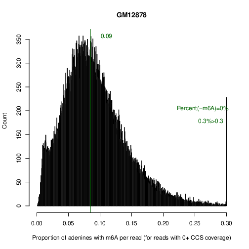 | Percent(#m6A/#ATs<0.01)=1.2%
Percent(#m6A/#ATs<0.2)=96.6%
Median(#m6A/#ATs)=0.08511095
Percent(#m6A/#ATs>0.3)=0.3%
Number(-m6A)=0
Percent(-m6A)=0%
|
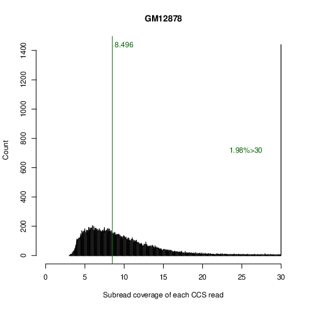 | Median(EQ)=8.496
Percent(Coverage>30)=1.98%
|
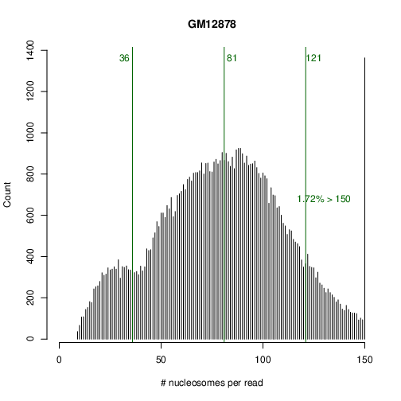 | Percent(NucsPerRead>150)=1.72%
Quantile10%(NucsPerRead)=36
Median(NucsPerRead)=81
Quantile90%(NucsPerRead)=121
|
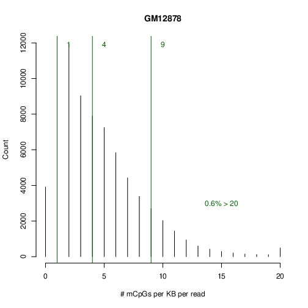 | Quantile10%(mCpGsPerKB)=1
Median(mCpGsPerKB)=4
Quantile90%(mCpGsPerKB)=9
Percent(mCpGsPerKB>20)=0.6%
|
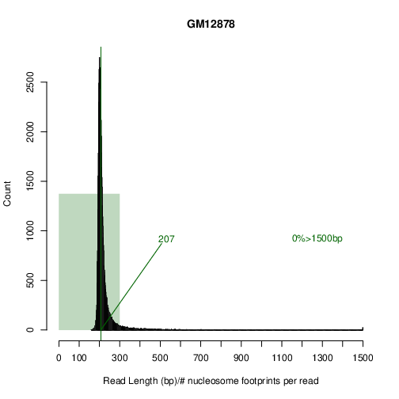 | Percent(ReadLength/#nucs<=300bp)=95.8%
Median(ReadLength/#nucs<=300bp)=207
Percent(ReadLength/#nucs>1500bp)=0%
|
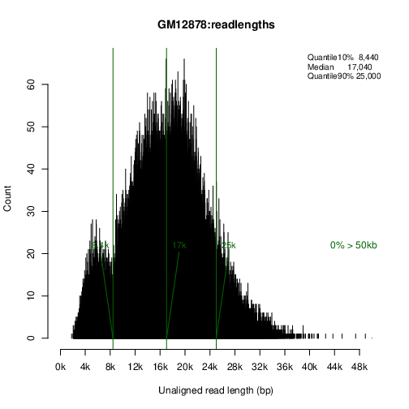 | Quantile10%(ReadLength)=8440
Median(ReadLength)=17040
Quantile90%(ReadLength)=25000
Percent(ReadLength>50kb)=0%
N50(ReadLength)=19240
L50(ReadCount)=26173
Total_GB(Bases)=1.228813
Exact_Total_GB(Bases)=1.22914
|
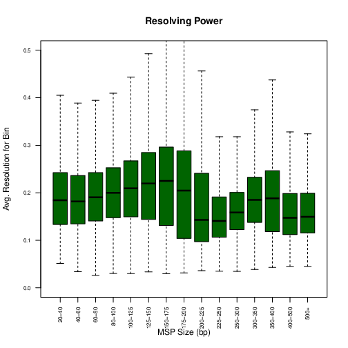 | Median(175-200bp)=0.204545
|
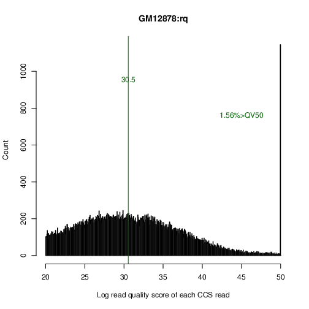 | Median(-10*log10(1-rq))=30.54741
Percent(Quality>QV50)=1.56%
|
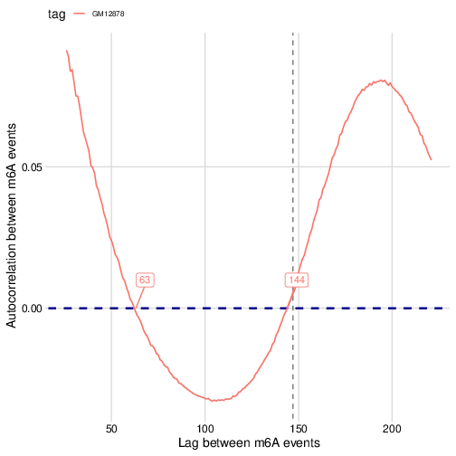 | X[Y==0]=63,144
|
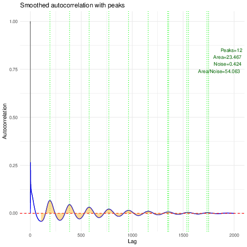 | Asymptote(Curve)=-0.000
Area(Curve)=23.467
Count(Peaks)=12
Noise(Curve)=0.424
Area(Curve)/Noise(Curve)=54.063
|
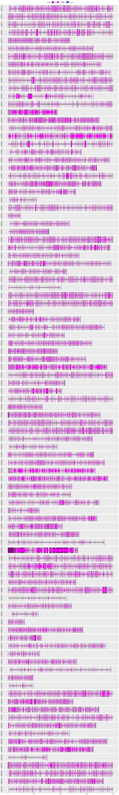 | # Note: Range 0K-20K
Number(Fibers)=99/100
|
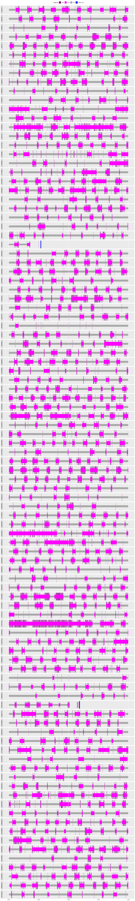 | # Note: Range 2K-4K
Number(Fibers)=99/100
|